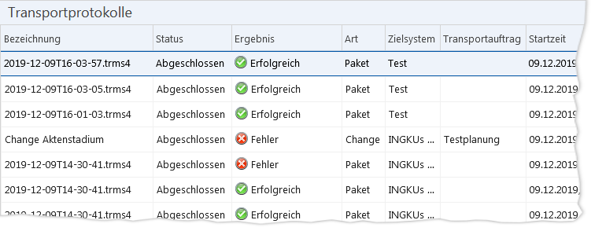

Menüpunkt „Transportprotokolle“
TEXT SCRAMBLING in TRIAL VERSION OUTPUT! In evaluation mode, Help+Manual will scramble individual characters in random words in your published output files. This is a limitation of the free trial version. This help system was created with an evaluation copy of Help+Manual.
Zusammenhänge
Für jeden Transport in ein IKAROS-Zielsystem, den Sie mit dem TRMS durchführen, wird ein Protokoll angelegt. Dieses enthält die Ergebnisse zum Übertragungsprozess des Pakets in das Zielsystem sowie der dortigen Installation der Artefakte.
Die Liste der Transportprotokolle
Sie finden die Liste der Transportprotokolle im Menüpunkt „Transportprotokolle“.

Abb. 33: Menüpunkt „Transportprotokolle“
Schaltflächen
Symbol
|
Schaltfläche
|
Beschreibung
|

|
„Filtern“
[Leertaste]
|
Ruft den Filterdialog für die Auswahlliste auf.
|

|
„Aufheben“
[Strg] + [R]
|
Hebt die aktuellen Filtereinstellungen auf.
|

|
„Sichten“
[F6]
|
Ruft den Verwaltungsdialog für benutzerdefinierte Sichten auf.
|